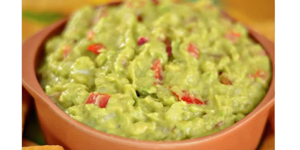

RECEITA - GUACAMOLE
INGREDIENTES
- 2 abacates maduros
- 1 tomate picado
- 1/2 cebola roxa picada
- 1 dente de alho picado
- Suco de 1 limão
- Coentro picado a gosto
- Sal e pimenta a gosto
MODO DE PREPARO
- Amasse os abacates em uma tigela.
- Adicione o tomate, a cebola, o alho, o suco de limão e o coentro.
- Tempere com sal e pimenta a gosto.
- Misture bem e sirva com nachos ou como acompanhamento.
Voltar